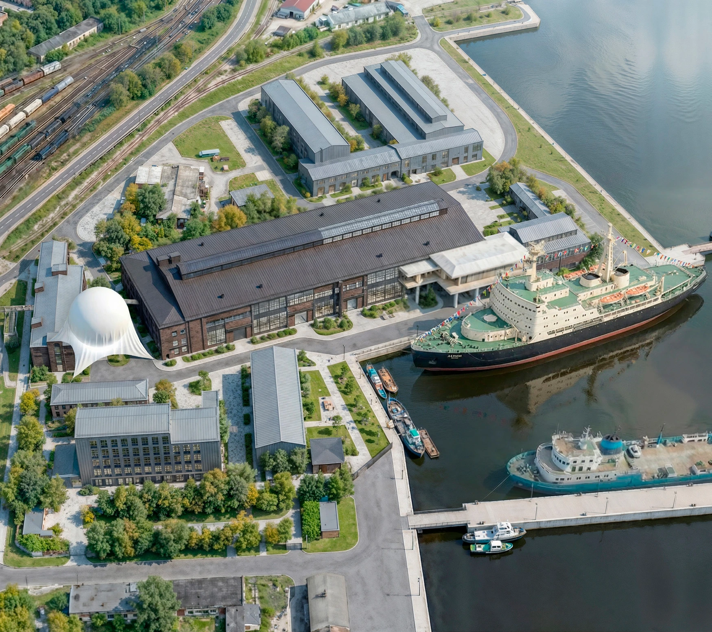
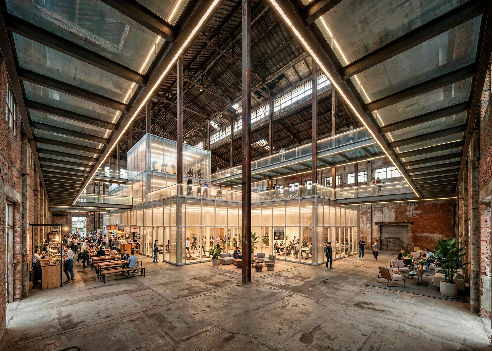

Запрос для Codex
Проверь, установлен ли QGIS. Если нет, подбери стабильную версию для моей системы на qgis.org. Покажи источник, дождись подтверждения и проверь запуск после установки.
От модели до образа места
От промышленной набережной к общественному пространству внутри цеха. Конкурсный проект DŌ buro.
Мурманск даёт России выход в Арктику через глубоководный незамерзающий порт. На этом берегу рядом живут портовая работа и городская память.
На схеме природный участок выделен внутри промышленной набережной. Проследите переход от городской застройки к воде.
Модель задаёт ракурс и геометрию цеха. Снимок сверху помогает восстановить берег, пути и соседние здания.
Переключите рамку на квадрат. Какие ориентиры у причала останутся за краем?
Перед вами две версии одного ракурса. Сдвиньте границу и сравните левый торец цеха, правый фасад и суда.
Ищите белый купол у левого торца и судно у причала справа.


Семёновское озеро, Мурманск. Выберите точки А и Б, измерьте перепад и посмотрите поверхность в объёме.
Откройте учебный проект у озера. Если QGIS ещё не установлен, попросите Codex подготовить его для вашей системы.
Проверь, установлен ли QGIS. Если нет, подбери стабильную версию для моей системы на qgis.org. Покажи источник, дождись подтверждения и проверь запуск после установки.
Через MCP помощник может вызвать инструмент в подключённой программе. Попробуйте запросить разницу высот двух точек.
Проверь подключение к QGIS. Считай высоты в точках А и Б, покажи значения, единицы и разницу. Если чтение растра недоступно, объясни, как проверить высоты вручную.
Выберите свою программу. Для проверки масштаба и положения сохраняйте исходные отметки и единицы.
Импортируйте XYZ в метрах. Сверьте высоты А и Б и положение местного нуля.
Скачать точки XYZПроверь единицы чертежа и масштаб эскиза по известному размеру. Покажи ось дорожки и контур шириной 3 м для упражнения.
Поверните модель и снимите кровлю. Найдите внешний контур цеха и посмотрите, что находится внутри.
Рассмотрите остеклённый объём в старом каркасе и проследите по схемам, как разделены уровни цеха.
Сверьте три конкурсных ракурса с продольным разрезом. Выберите любой материал, чтобы рассмотреть его крупнее.
Наведите на метку или выберите фразу. Найдите деталь, по которой будете проверять результат.

Соберите запрос из двух частей. Зелёным отмечено задание для модели, красным выделены ограничения.
На исходной фотографии красным задан контур барной стойки, зелёным отмечены места стульев. Проверьте их положение на результате.
Из задания на с. 6: «мебель должна соответствовать габаритам блоков».
Возьмите один знакомый ракурс. Задайте одну правку и назовите две детали, которые должны остаться на месте.